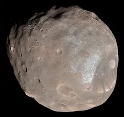

Satelit Alami Mars
Phobos merupakan satelit alami terbesar dan terdekat yang mengorbit planet Mars. Ditemukan oleh Asaph Hall pada tahun 1877, Phobos memiliki morfologi asimetris menyerupai kentang akibat gravitasinya yang sangat rendah sehingga tidak mampu mencapai kesetimbangan hidrostatik. Phobos mengorbit Mars pada jarak rata-rata sekitar 6.000 km—menjadikannya satelit alami dengan jarak orbit terdekat ke planet induknya di seluruh Tata Surya. Akibat pasang surut gravitasi (tidal decay), Phobos mendekati Mars sekitar 1,8 meter per abad dan diperkirakan akan hancur membentuk cincin planetary atau menabrak permukaan Mars dalam kurun waktu 30 hingga 50 juta tahun ke depan.